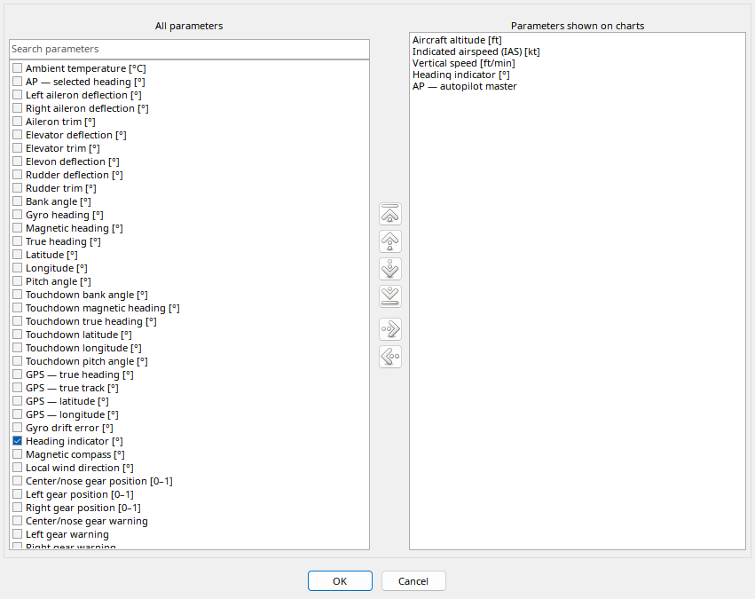

The left list contains available parameters; the right list contains only the ordered chart selection. Search narrows the left list; clear it after adding items to find other groups. Buttons and dragging between lists perform the same show/hide operation.
To reorder, select a right-hand item and move it up/down or to the beginning/end. Ctrl-drag within the displayed list reorders at the drop position. OK applies the complete selection; Cancel discards editing. The screenshot uses the full standard FDR catalog rather than five artificial entries. The SimVar catalog chapter lists all of them.
The dialog separates available parameters from the ordered displayed list.
| Option / action | Behavior and limitations |
|---|---|
| Search | Find a name fragment; clear it for the full list. Filtering does not delete telemetry. |
| Show / hide | Add/remove the selected chart from the displayed list without modifying the flight. |
| Drag between lists | Drag to show or hide. Only accepted targets change selection; drop feedback indicates acceptance. |
| Reorder | Use up/down/first/last buttons or Ctrl-drag in the displayed list. Drop between rows to choose insertion position. |
| OK / Cancel | OK applies selection/order; Cancel discards this dialog's edits. |
